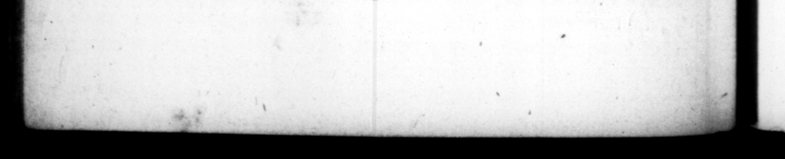

— _ — — . be quoque & Italia ſubmoNe Ipſe quoſdam novo exemplo relega vit, ut ultra lapidem tertium vetaret egredi ab urhe. De majore ne- Eotio acturus, in curia medius inter Conſulum ſellas, tri bunitio ſubſellio ſedebat. Commeatus a Senatu petri ſoJitos bene ficii ſu fecit. cenſe to travel out of Italy, which before had belonged to the ſenate 24. Ornamenta conſularia etiam procuratoribis ducenaTits indulſit. Senator iam dignitatem recuſantibus, equeltrem quoque ademit. Latum clavum, quamvis initio affirmaſſet non lecturum Senarorem, niſi civis Romano abnepotem, etiam libertint filio tribnir : fed ſal conditione, {i prius ab equite Romanoadoptatus eſſet. Ac ſic quoque reprehenfhonemiverens, et iamAppiumC cum generis ſuĩ proauctorem, cenſorem libert inorum fili in Senatum allegiſſe r. it : ignarus, temporibus p & deinceps 8 ibertinos dictos, non ipſos qui manumitterentur, ſed inenuos ex his procreatos. ollegio Quzſtorum pro ſtratura v iarum gladiatorium munus injunxit; detractaque Oſtienſi & Gallica prow ine ia, curam ærarii Saturni zeddidit, quam medio tempore prætores aut utique Prætura functi ſuſt inuerant. Triumphalia ornamenta Silano filiæ ſux ſponſo} nondum puberi Cedir, Majoribus vero natu, ram mulris, tamque facile, ut epittola communi legionum nomine exſtiterit, petentium, & legatit cemſularibus ſimul cum exerts & triu git mphalia darentur, nie can ſam # quequo mod guerrrent, A. Plautio etiam ovationem decrevit; ingreſſoque urbem obv iam progreſſus, & in Capitolium eunti & inde ruzlus revertenti 4. of iſhment, by id ding t t 33 dition that he ſhould * a SUB. NAA who were baniſhed * by the preſident „ ſhould be debarred wh. 755 in the city, er d part of Rag, inflifted upon ſome' a ne ſort of by. three miles from Rome, When aff air of importance came before the fe. nate, he uſed to fot betwit the to unſuls upon the tribune bench. He aum. ed to himſelf the power of granting g. 24. He likeniſe granted the 2 ornaments to his procurators ca 8 cenarij. From ſuch as refuſed the natorian dignity, be took aw equeſtrian too; tho he had in the be. inning of his reign declared, he wad chuſe no man into the ſenate, that was not the great grand-ſon of a Roman ſenator ; yet he gave the latus Claws to the ſon of a freed-man ; but upon con. b adop:ed by. A Roman knight : but being afraid the world wou 7+ fs bim for it; be . farmed the publick, that his rw 4 elder Appius 5 the cenſor, * ſen the ſons of men into the [e. nate: for he war ignorant, it ſeams, that in the times of Appius, and tag while after, perſons manigmiſed, rere net called libertini, but ther ſons that were free · born. Inſtead of the erpence the queſtars were obliged to be at, for the paving of the high way, be ordered them to gi ve the people a ſhew of $ladiators: and taking from them f 2 the Oſtian 1 Cy reſtored to them the charge treaſury, which ſence the time is Was taken from them, bad been managed the pretors, e thoſe that had been ſo. He gave the friumphal ornaments te Silanus contratted to his daughter, the he was under age: blit to elder in ſuch numbers, and ſo eaſily, that be wa: unanimouſly addreſſed by all the legions to grant Hi, conſular lievtenanis the triumphal ornaments tagether with their commiſſions, to prevent their engaging in unneceſſary wars. He gave A. Plautius the bonour of an Ovation, and meeting him at his entering the town, walked along with bim into the Capitol and back again: and allav'd Cabins Chaucis,
